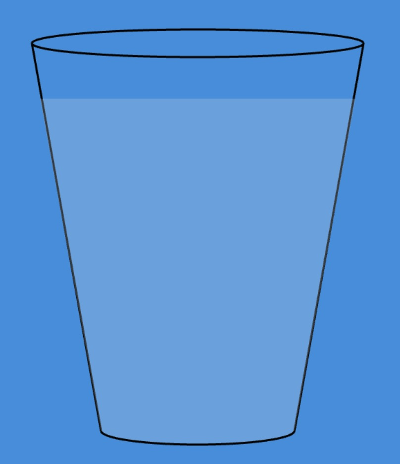
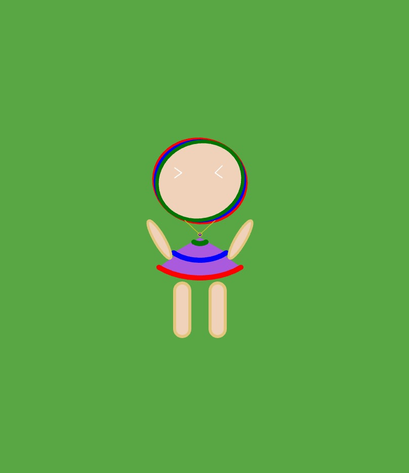
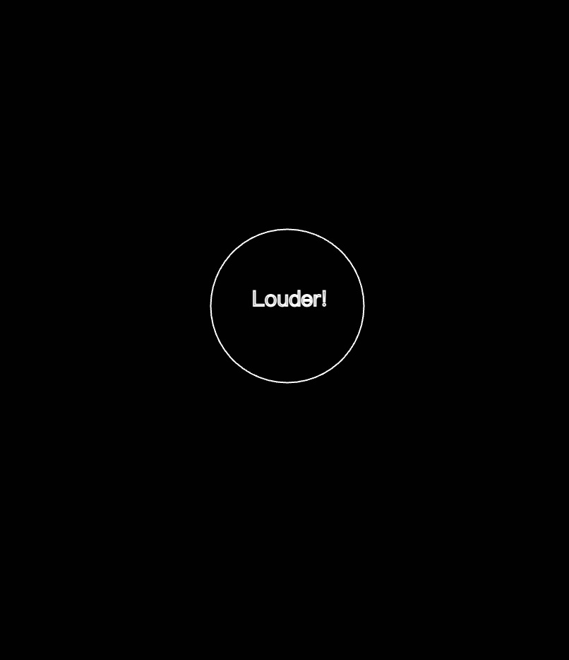

Energia: our health helper
Unhealthy lifestyles are becoming more common among young people.
The time box below is exactly where you are right now.
Think about the question/suggestion below and take actions.
Healthy Tip 1: Skip rope everyday.
Rope skipping is an easy-to-learn, moderate-to-high intensity type of aerobic exercise(Lin Zongyu et al.,
2023). Why not take rope skipping a regular exercice?
 Go!👉
Healthy Tip 2: Drink enough water.
Go!👉
Healthy Tip 2: Drink enough water.
Staying hydrated is really important. The normal daily water requirement is between 1500-2500mL. The
temperature of the water is also important, improper temperature will impacts our stomach.
Go!👉
Healthy Tip 3: Do eye exercices.
Although we all know the dangers of spending too much time looking at screens, electronic devices are now
inevitable for our daily study or work.
Doing some easy eye training every 20 min may help us protecting eyes a lot.
Go!👉
Bonus Tip!
At some point in our lives, we all feel depressed and stressed. Giving vent to your negative emotions is
also important to make us mentally healthy.
Go!👉
Lin, Zongyu, et al. "High-fiber diet and rope-skipping benefit cardiometabolic health and modulate gut
microbiota in young adults: A randomized controlled trial." Food Research International 173 (2023): 113421.
pictures from Wikipedia.com